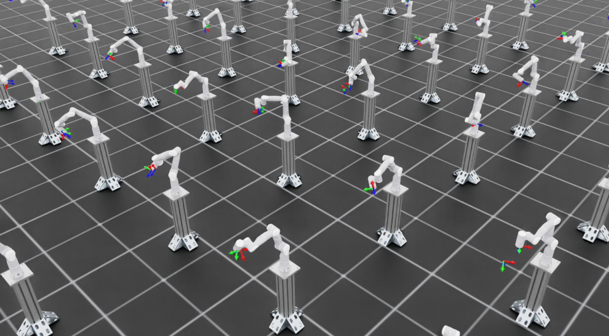

训练用于实机部署的 Reach 策略#
本教程介绍如何训练末端执行器位姿跟踪（Reach）强化学习（RL）策略，并从仿真迁移到真实机器人。完成后，您将得到一个能够控制机械臂、在工作空间内到达任意目标末端位姿的策略。
支持的机器人：
Universal Robots UR10e ：6 自由度工业机械臂
Flexiv Rizon 4s ：7 自由度协作机械臂
本教程的范围：
本教程介绍仿真到现实工作流的 训练 部分。实机部署步骤，包括机器人接口设置及 ROS 推理节点配置，见 Isaac ROS 文档 。
前提条件：
开始之前，请确保已安装并配置 Isaac Lab。如果尚未配置环境，请按 安装指南 操作。
任务概览#
Reach 任务训练策略跟踪机器人工作空间内随机采样的末端执行器位姿。
工作原理：
在指定工作空间内随机采样目标位姿（位置和朝向）
策略接收当前关节状态和目标位姿作为观测
策略输出增量关节位置指令，使末端执行器朝目标移动
训练时定期重新采样目标，让策略能泛化到整个工作空间
仿真到现实迁移的关键概念#
成功的仿真到现实迁移需要保证三方面的一致性：
输入一致性 ：仿真中的观测必须与实机可获得的观测一致。
系统响应一致性 ：仿真机器人对动作的响应应与实机相近。
输出一致性 ：部署时必须复现对策略输出进行的所有后处理。
妥善处理这些问题后，仅在仿真中训练的策略也能迁移到真实硬件，无需任何实机训练数据。
观测空间#
策略只接收本体感知观测，这些数据可由机器人控制器可靠地提供：
观测 |
UR10e 维度 |
Rizon 4s 维度 |
来源 |
|---|---|---|---|
|
6 |
7 |
机器人关节编码器 |
|
6 |
7 |
机器人关节编码器 |
|
7 |
7 |
目标位姿（三维位置 + 四元数） |
总观测维度： 19（UR10e）或 21（Rizon 4s）
实现:
@configclass
class PolicyCfg(ObsGroup):
"""Observations for policy group."""
joint_pos = ObsTerm(func=mdp.joint_pos, noise=Unoise(n_min=-0.0, n_max=0.0))
joint_vel = ObsTerm(func=mdp.joint_vel, noise=Unoise(n_min=-0.0, n_max=0.0))
pose_command = ObsTerm(func=mdp.generated_commands, params={"command_name": "ee_pose"})
def __post_init__(self):
self.enable_corruption = True
self.concatenate_terms = True
备注
噪声项默认为零（ Unoise(n_min=-0.0, n_max=0.0) ），即不添加观测噪声。如果希望通过噪声建模进一步提升鲁棒性，可以调整这些值。现代机器人控制器提供的关节状态反馈已足够准确，因此本任务的仿真到现实迁移不需要在训练时额外加噪声。
动作空间#
策略输出 增量关节位置指令 。每个动作指定应叠加到当前关节位置上的增量：
self.actions.arm_action = mdp.RelativeJointPositionActionCfg(
asset_name="robot",
joint_names=[".*"],
scale=0.0625, # ~3.6 degrees per action step
use_zero_offset=True,
)
self.actions.arm_action = mdp.RelativeJointPositionActionCfg(
asset_name="robot",
joint_names=["joint[1-7]"],
scale=0.0625, # ~3.6 degrees per action step
use_zero_offset=True,
)
每步动作缩放系数为 0.0625 弧度（约 3.6 度），兼顾响应速度和运动平滑性。UR10e 使用 [".*"] 匹配所有关节；Rizon 4s 则显式指定 ["joint[1-7]"] ，匹配 7 个机械臂关节。
动作维度： 6（UR10e）或 7（Rizon 4s）
机器人配置#
每个机器人都有专用的执行器配置和工作空间定义。
UR10e 是 6 自由度工业机器人，使用以下执行器配置：
actuators = {
"shoulder": ImplicitActuatorCfg(
joint_names_expr=["shoulder_.*"],
stiffness=1320.0,
damping=72.66,
friction=0.0,
armature=0.0,
),
"elbow": ImplicitActuatorCfg(
joint_names_expr=["elbow_joint"],
stiffness=600.0,
damping=34.64,
friction=0.0,
armature=0.0,
),
"wrist": ImplicitActuatorCfg(
joint_names_expr=["wrist_.*"],
stiffness=216.0,
damping=29.39,
friction=0.0,
armature=0.0,
),
}
末端执行器：
连杆：
wrist_3_link默认朝向：末端执行器朝下（roll = pi，yaw = -pi/2）
目标工作空间：
# Position (meters, relative to robot base)
pos_center = (0.8875, -0.225, 0.2)
pos_range = (0.25, 0.125, 0.1) # ±25cm x, ±12.5cm y, ±10cm z
# Orientation (radians)
rot_center = (pi, 0.0, -pi/2)
rot_range = (pi/6, pi/6, pi*2/3) # ±30 deg roll/pitch, ±120 deg yaw
Rizon 4s 是 7 自由度协作机器人，各关节组的力矩、速度及刚度特性不同：
actuators = {
# Joints 1-2: Higher torque (123 Nm), lower speed
"shoulder": ImplicitActuatorCfg(
joint_names_expr=["joint[1-2]"],
joint_effort_limit=123.0,
joint_velocity_limit=2.094, # 120 deg/s
stiffness=6000.0,
damping=108.5,
friction=0.0,
armature=0.0,
),
# Joints 3-4: Medium torque (64 Nm), medium speed
"elbow": ImplicitActuatorCfg(
joint_names_expr=["joint[3-4]"],
joint_effort_limit=64.0,
joint_velocity_limit=2.443, # 140 deg/s
stiffness=4200.0,
damping=90.7,
friction=0.0,
armature=0.0,
),
# Joints 5-7: Lower torque (39 Nm), higher speed
"wrist": ImplicitActuatorCfg(
joint_names_expr=["joint[5-7]"],
joint_effort_limit=39.0,
joint_velocity_limit=4.887, # 280 deg/s
stiffness=1500.0,
damping=54.2,
friction=0.0,
armature=0.0,
),
}
末端执行器：
连杆：
flange默认朝向：末端执行器朝下（roll = pi）
目标工作空间：
# Position (meters, relative to robot base)
pos_center = (0.4, 0.0, 0.4)
pos_range = (0.4, 0.4, 0.35) # ±40cm x, ±40cm y, ±35cm z
# Orientation (radians)
rot_center = (pi, 0.0, 0.0)
rot_range = (pi/2, pi/2, pi) # ±90 deg roll/pitch, ±180 deg yaw
自定义工作空间#
您可能需要修改目标工作空间，以匹配实际部署场景。可调整的主要参数包括：
目标位置范围
修改机器人专用配置文件（如 joint_pos_env_cfg.py ）中的 target_pos_centre 和 target_pos_range ：
# Center of the target workspace (meters, relative to robot base)
self.target_pos_centre = (0.5, 0.0, 0.4)
# Half-extents of the workspace in each dimension
self.target_pos_range = (0.2, 0.2, 0.15) # ±20cm x, ±20cm y, ±15cm z
影响：
扩大范围会增加任务难度，但有助于提升泛化能力。
确保所有目标位置都在机器人可达范围内（满足运动学限制）。
工作空间之外的目标会导致策略失败。
目标朝向范围
修改 target_rot_centre 和 target_rot_range ：
# Center orientation (roll, pitch, yaw in radians)
self.target_rot_centre = (math.pi, 0.0, 0.0)
# Range of rotation variation around the center
self.target_rot_range = (math.pi/6, math.pi/6, math.pi) # ±30 deg, ±30 deg, ±180 deg
影响：
扩大朝向范围可训练适用范围更广的策略，但可能减慢收敛。
范围过大（如允许任意旋转）会显著增加训练难度。
动作缩放系数
修改动作配置中的 scale 参数：
self.actions.arm_action = mdp.RelativeJointPositionActionCfg(
asset_name="robot",
joint_names=[".*"],
scale=0.0625, # Decrease for finer control, increase for faster motion
use_zero_offset=True,
)
影响：
系数较小：控制更精细、运动更平滑，但到达目标较慢。
系数较大：运动更快，但可能出现突变或越过目标。
部署到实机时必须使用相同的缩放系数。
目标重采样间隔
修改命令配置中的 resampling_time_range ：
self.commands.ee_pose.resampling_time_range = (4.0, 4.0) # Resample every 4 seconds
影响：
间隔较短：每回合能接触更多不同目标，但到达每个目标的时间更少。
间隔较长：有更多时间精细跟踪，但训练中接触的目标更少。
域随机化#
域随机化有助于策略适应真实机器人行为的变化。
执行器增益随机化：
robot_joint_stiffness_and_damping = EventTerm(
func=mdp.randomize_actuator_gains,
min_step_count_between_reset=200,
mode="reset",
params={
"asset_cfg": SceneEntityCfg("robot"),
"stiffness_distribution_params": (0.9, 1.1), # 90-110% of nominal
"damping_distribution_params": (0.75, 1.5), # 75-150% of nominal
"operation": "scale",
"distribution": "uniform",
},
)
min_step_count_between_reset=200 可避免执行器增益过于频繁地重新随机化，让策略在参数再次变化前有时间适应当前设置。
关节摩擦随机化：
joint_friction = EventTerm(
func=mdp.randomize_joint_parameters,
min_step_count_between_reset=200,
mode="reset",
params={
"asset_cfg": SceneEntityCfg("robot"),
"friction_distribution_params": (0.0, 0.1), # Add 0-0.1 Nm friction
"operation": "add",
"distribution": "uniform",
},
)
初始关节位置随机化：
reset_robot_joints = EventTerm(
func=mdp.reset_joints_by_offset,
mode="reset",
params={
"position_range": (-0.125, 0.125), # ±7 degrees
"velocity_range": (0.0, 0.0),
},
)
奖励结构#
策略使用基于关键点的奖励进行训练，同时衡量位置和朝向精度：
@configclass
class RewardsCfg:
"""Reward terms for the MDP."""
# Linear penalty for keypoint tracking error
end_effector_keypoint_tracking = RewTerm(
func=mdp.keypoint_command_error,
weight=-1.5,
params={
"asset_cfg": SceneEntityCfg("ee_frame"),
"command_name": "ee_pose",
"keypoint_scale": 0.45,
},
)
# Exponential reward for fine precision
end_effector_keypoint_tracking_exp = RewTerm(
func=mdp.keypoint_command_error_exp,
weight=1.5,
params={
"asset_cfg": SceneEntityCfg("ee_frame"),
"command_name": "ee_pose",
"kp_exp_coeffs": [(50, 0.0001), (300, 0.0001), (5000, 0.0001)],
"kp_use_sum_of_exps": False,
"keypoint_scale": 0.45,
},
)
# Penalties for smooth motion
action_rate = RewTerm(func=mdp.action_rate_l2, weight=-0.005)
action = RewTerm(func=mdp.action_l2, weight=-0.005)
基于关键点的奖励在末端执行器坐标系上放置虚拟标记，并测量它们与目标坐标系上对应标记之间的距离。该指标能够自然地同时反映位置和朝向误差。
训练策略#
步骤 1：验证环境#
开始完整训练前，先短暂运行一次可视化，确认环境配置正确：
uv run isaaclab train --rl_library rsl_rl \
--task IsaacContrib-Deploy-Reach-UR10e-ROS-Inference \
--num_envs 4 \
--visualizer kit
./isaaclab.sh train --rl_library rsl_rl \
--task IsaacContrib-Deploy-Reach-UR10e-ROS-Inference \
--num_envs 4 \
--visualizer kit
uv run isaaclab train --rl_library rsl_rl \
--task IsaacContrib-Deploy-Reach-Rizon4s-ROS-Inference \
--num_envs 4 \
--visualizer kit
./isaaclab.sh train --rl_library rsl_rl \
--task IsaacContrib-Deploy-Reach-Rizon4s-ROS-Inference \
--num_envs 4 \
--visualizer kit
这会打开 Isaac Sim 查看器，让您实时观察训练。

训练可视化展示多个并行环境中的机器人向目标位姿移动。#
检查要点：
机器人应移动机械臂，尝试到达不同位姿。
训练初期策略正在探索，运动不规则是正常现象。
对于 Rizon 4s ：目标位姿标记以坐标系形式显示在场景中。
对于 UR10e ：目标可视化已关闭（
debug_vis = False），因为命令在base坐标系中生成，而它与渲染使用的base_link坐标系相差 180 度。机器人仍会跟踪目标，但不会显示标记。
确认环境显示正确后，按 Ctrl+C 停止训练，再开始完整规模的训练。
步骤 2：完整规模训练#
在无界面模式下，使用大量并行环境启动完整训练：
uv run --extra video isaaclab train --rl_library rsl_rl \
--task IsaacContrib-Deploy-Reach-UR10e-ROS-Inference \
--num_envs 4096 \
--video --video_length 720 --video_interval 72000
./isaaclab.sh train --rl_library rsl_rl \
--task IsaacContrib-Deploy-Reach-UR10e-ROS-Inference \
--num_envs 4096 \
--video --video_length 720 --video_interval 72000
uv run --extra video isaaclab train --rl_library rsl_rl \
--task IsaacContrib-Deploy-Reach-Rizon4s-ROS-Inference \
--num_envs 4096 \
--video --video_length 720 --video_interval 72000
./isaaclab.sh train --rl_library rsl_rl \
--task IsaacContrib-Deploy-Reach-Rizon4s-ROS-Inference \
--num_envs 4096 \
--video --video_length 720 --video_interval 72000
命令说明：
--num_envs 4096：运行 4096 个并行环境，高效采集数据。--video：录制视频，便于观察训练进展。--video_length 720：每段视频恰好覆盖一个完整回合（episode_length_s / (sim.dt * decimation)=12.0 / (1/120 * 2)= 720 步）。--video_interval 72000：每 72000 个环境步（约每 100 次训练迭代）录制一段视频。
训练配置：
两个机器人使用相同的训练超参数：
num_steps_per_env = 512
max_iterations = 1500
save_interval = 50
obs_groups = {"actor": ["policy"], "critic": ["policy"]}
actor = RslRlMLPModelCfg(
hidden_dims=[256, 128, 64],
activation="elu",
obs_normalization=True,
distribution_cfg=RslRlMLPModelCfg.GaussianDistributionCfg(init_std=1.0),
)
critic = RslRlMLPModelCfg(
hidden_dims=[256, 128, 64],
activation="elu",
obs_normalization=True,
)
algorithm = RslRlPpoAlgorithmCfg(
value_loss_coef=1.0,
use_clipped_value_loss=True,
clip_param=0.2,
entropy_coef=0.0,
num_learning_epochs=8,
num_mini_batches=8,
learning_rate=5.0e-4,
schedule="adaptive",
gamma=0.99,
lam=0.95,
desired_kl=0.008,
max_grad_norm=1.0,
)
UR10e 的 experiment_name 为 "reach_ur10e" ，Rizon 4s 的为 "reach_rizon4s" 。训练通常需要 1–3 小时，具体取决于 GPU。
步骤 3：监控训练进展#
使用 TensorBoard 监控训练指标：
uv run python -m tensorboard.main --logdir logs/rsl_rl/reach_ur10e
./isaaclab.sh -p -m tensorboard.main --logdir logs/rsl_rl/reach_ur10e
uv run python -m tensorboard.main --logdir logs/rsl_rl/reach_rizon4s
./isaaclab.sh -p -m tensorboard.main --logdir logs/rsl_rl/reach_rizon4s
如果训练日志位置不同，请将日志目录路径改为实际位置。
主要观察指标：
平均奖励 ：应持续增长，并在策略收敛后趋于平稳。
奖励项 ：观察各个奖励分量，以了解策略行为：
end_effector_keypoint_tracking：线性关键点跟踪惩罚，随着策略改善，应逐渐接近零（负值的绝对值减小）。end_effector_keypoint_tracking_exp：指数精度奖励，随着跟踪精度提高，应逐渐增大。action_rate和action：运动平滑性惩罚，数值较小，但训练中应逐渐增大（负值接近零），表明策略正收敛到更平滑的运动。
位置误差 ：末端执行器与目标位置之间的欧氏距离，单位为米，应随训练减小。
朝向误差 ：末端执行器与目标朝向之间的角度差，应随训练减小。
步骤 4：评估已训练策略#
训练完成后，用回放命令评估策略。回放命令会自动应用任务的回放模式覆盖设置（ play_mode ），关闭观测扰动以便更清楚地评估，并限制环境数量以改善可视化：
uv run isaaclab play --rl_library rsl_rl \
--task IsaacContrib-Deploy-Reach-UR10e \
--num_envs 50 \
--visualizer kit
./isaaclab.sh play --rl_library rsl_rl \
--task IsaacContrib-Deploy-Reach-UR10e \
--num_envs 50 \
--visualizer kit
uv run isaaclab play --rl_library rsl_rl \
--task IsaacContrib-Deploy-Reach-Rizon4s \
--num_envs 50 \
--visualizer kit
./isaaclab.sh play --rl_library rsl_rl \
--task IsaacContrib-Deploy-Reach-Rizon4s \
--num_envs 50 \
--visualizer kit
加载检查点：
默认情况下，回放命令会自动加载最新训练运行中的最新检查点。它在 logs/rsl_rl/<experiment_name>/ 中搜索，按字母顺序排序后选择最后一个运行文件夹和检查点文件。
要加载指定检查点，使用以下参数：
# Load a specific checkpoint file
uv run isaaclab play --rl_library rsl_rl \
--task IsaacContrib-Deploy-Reach-UR10e \
--checkpoint /path/to/model_1500.pt
# Load a specific checkpoint file
./isaaclab.sh play --rl_library rsl_rl \
--task IsaacContrib-Deploy-Reach-UR10e \
--checkpoint /path/to/model_1500.pt
步骤 5：部署到真实机器人#
确认训练效果符合预期后，通过 Isaac ROS 部署流水线部署到真实硬件。该流水线使用：
训练得到的模型检查点（
.pt文件）训练时生成的
agent.yaml和env.yaml配置文件
无需额外的导出步骤。
详细部署步骤见 Isaac ROS 文档 。
故障排除#
CUDA 内存不足#
错误：
torch.OutOfMemoryError: CUDA out of memory.
解决办法：
减少并行环境数量：
--num_envs 2048 # or 1024, 512, etc.
关闭视频录制：
移除
--video参数，以释放 GPU 显存。
策略不收敛#
如果经过多次迭代奖励仍没有改善：
检查目标工作空间范围 ：确保所有目标位姿都能被机器人到达。
核对关节名称 ：确认仿真与配置中的关节顺序一致。
减小域随机化 ：暂时关闭随机化，确认基础任务能正常运行。
实机运动不平滑#
如果部署后的策略产生突变或不稳定运动：
减小动作缩放系数 ：降低
RelativeJointPositionActionCfg中的scale参数。核对控制频率 ：确保实机与仿真的运行频率相同（默认为 60 Hz）。
核对关节顺序 ：确认仿真与实机的关节名称和顺序一致。